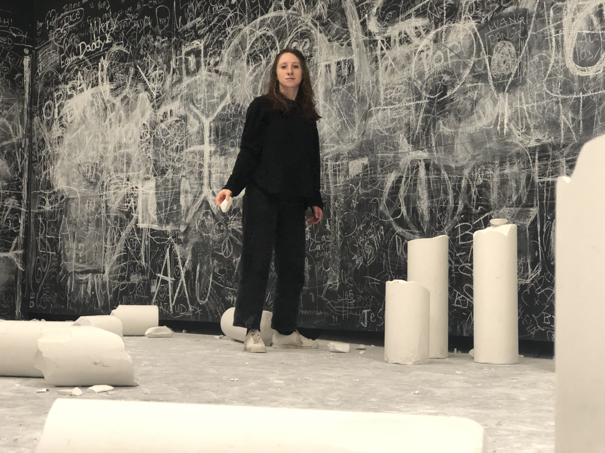

Teaching

Instructor experience:
- Summer 2021: Discrete geometry at BEAM Summer Away as a Junior Faculty member for BEAM LA
- Summer 2018: Logical Reasoning at BEAM Discovery as a Junior Faculty member for BEAM NYC
TA experience:
- Fall 2019 through Spring 2020: Calculus II, a year-long course through the University of Minnesota Talented Youth Mathematics Program (UMTYMP)
- Summer 2019: TA at the University of Minnesota Twin Cities REU in algebra and combinatorics
- Fall 2016 through Spring 2017: TA at the Center for Women in Mathematics at Smith College
- Fall 2014 through Spring 2016: TA at the Mathematics Tutoring Center at Reed College
Mentoring experience:
- Summer 2022: Mentor for a research problem at the University of Minnesota Twin Cities REU in algebra and combinatorics
- Fall 2020 through Spring 2021: Thesis advisor for UMN undergraduate Maxwell McKinney ('21) on his Senior Project about chip-firing on McKay-Cartan quivers.
- Fall 2019 through Spring 2021: Research mentor for a joint project with UMN undergraduates Nhung Pham ('22) and Annika Christensen ('22) on chip-firing. Watch Annika and Nhung's talk at the Nebraska Conference for Undergraduate Women in Mathematics .
- Fall 2018 and Fall 2021: Mentor for a Directed Reading Project with undergraduates Sophie Perron ('19) and Abigail Goldman-Nagel ('21)
Other teaching experience:
- Fall 2017 through Spring 2018: Volunteer math teacher for the Franklin Learning Center at the Franklin Library in Minneapolis. There, I taught math to adults preparing for their GED.
- Fall 2017 through Fall 2018: Taught at the Saturday Enrichment Program through MathCEP at the University of Minnesota.